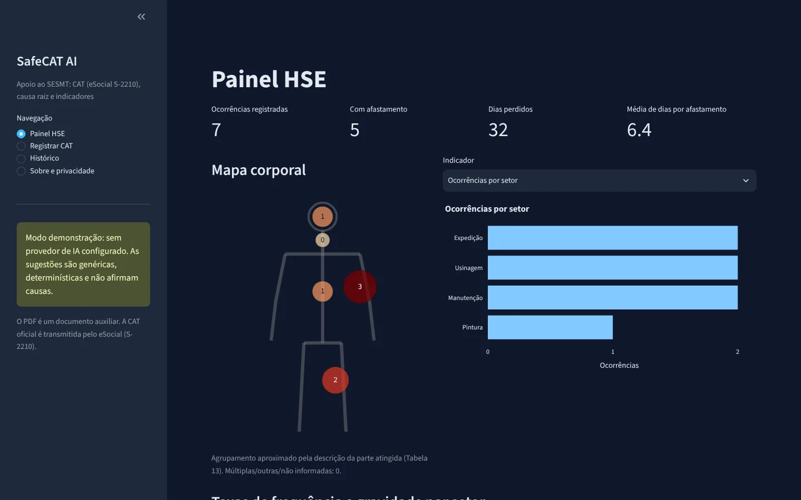
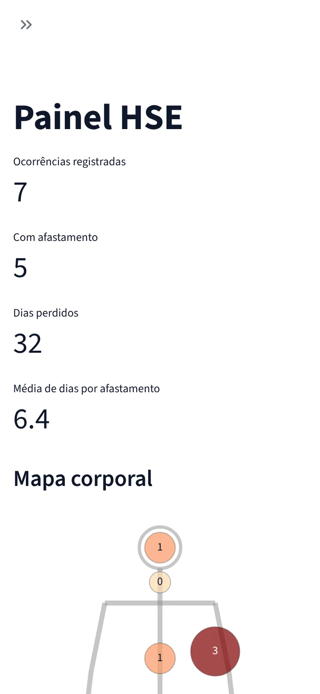

Import the official tables
Load eSocial tables 13 to 17 from the current official release and compare the CID-10 file with the latest DATASUS publication.
Case study · AI · Hackathon project
A web app for workplace safety teams to record accidents with the data the eSocial S-2210 (CAT) event requires, investigate the root cause with an AI-assisted 5 Whys, and track safety indicators.
01 — Problem
Filing a CAT means classifying the body part, causing agent, triggering situation and type of injury against eSocial tables, and transcribing the medical certificate. Mistakes and delays mean rework and penalties.
After filing, many incidents never get a root-cause investigation or an action plan, so the organization loses the chance to prevent a more serious accident.
02 — How a report flows
01
Text PDFs are read with pypdf. Scans go to the LLM’s vision only when a key is set. No field is filled unless it comes from the file.
02
CPF, PIS/NIT, CID-10 and date checks, plus a list of S-2210 fields still missing.
03
Claude returns JSON validated against Pydantic models, with causes and controls.
04
Every quote the AI cites is checked against the report. If it is not there, that level is discarded.
05
The safety team edits, reviews and signs. The record keeps who reviewed it.
Demo modeWithout an API key, a deterministic mode asks the 5 Whys questions without answering them and never proposes a root cause.
03 — Decisions & trade-offs
The eSocial tables 13 to 17 ship empty until they are imported from the official source, because a made-up code would produce a wrong CAT.
A fixed system prompt, user text sent as delimited data, delimiters neutralized, and every cited piece of evidence checked against the report.
The PDF only contains validated data, marks missing fields as “not provided” and states that the official CAT is sent through eSocial.
Masked CPF in lists, logs with IDs only, permanent deletion and a configurable retention purge.
A multi-stage image that runs as non-root with a read-only filesystem, health checks and Kubernetes manifests.
The product


04 — What I’d do next
Load eSocial tables 13 to 17 from the current official release and compare the CID-10 file with the latest DATASUS publication.
The app has no access control of its own yet. Put SSO or an OIDC proxy in front of it before real use.
Today it neither builds the XML nor transmits to eSocial, and the auxiliary PDF does not replace the official CAT.